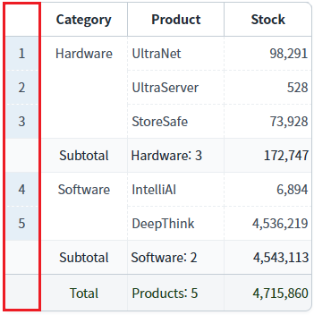
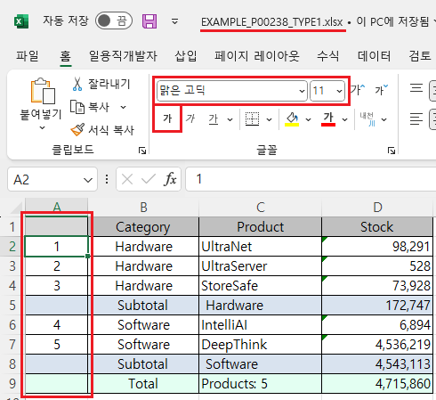
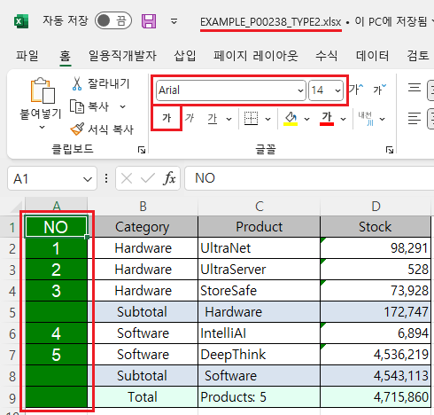

GridView의 'advancedExcelDownload' 메소드를 사용하여, 엑셀 다운로드 시 행 번호(rowNum) 컬럼에 스타일을 설정한 예제입니다.
'advancedExcelDownload' 메소드의 첫 번째 인자인 JSON 객체에 설정할 수 있는 행 번호 컬럼의 스타일 속성은 다음과 같습니다.
rowNumHeaderColor : [default: 없음] 행 번호 표시 컬럼의 header 배경색
rowNumHeaderFontName : [default: 없음] 행 번호 표시 컬럼의 header 폰트 이름
rowNumHeaderFontSize : [default: 없음] 행 번호 표시 컬럼의 header 폰트 크기
rowNumHeaderFontColor : [default: 없음] 행 번호 표시 컬럼의 header 폰트 색상
rowNumBodyColor : [default: 없음] 행 번호 표시 컬럼의 Body 배경색
rowNumBodyFontName : [default: 없음] 행 번호 표시 컬럼의 Body 폰트 이름
rowNumBodyFontSize : [default: 없음] 행 번호 표시 컬럼의 Body 폰트 크기
rowNumBodyFontColor : [default: 없음] 행 번호 표시 컬럼의 Body 폰트 색상
rowNumFooterColor : [default: 없음] 행 번호 표시 컬럼의 Footer 배경색
rowNumFooterFontName : [default: 없음] 행 번호 표시 컬럼의 Footer 폰트 이름
rowNumFooterFontSize : [default: 없음] 행 번호 표시 컬럼의 Footer 폰트 크기
rowNumFooterFontColor : [default: 없음] 행 번호 표시 컬럼의 Footer 폰트 색상
rowNumSubTotalColor : [default: 없음] 행 번호 표시 컬럼의 Subtotal 배경색
rowNumSubTotalFontName : [default: 없음] 행 번호 표시 컬럼의 Subtotal 폰트 이름
rowNumSubTotalFontSize : [default: 없음] 행 번호 표시 컬럼의 Subtotal 폰트 크기
rowNumSubTotalFontColor : [default: 없음] 행 번호 표시 컬럼의 Subtotal 폰트 색상
이 기능은 'advancedExcelDownload' 메소드의 첫 번째 인자 JSON의 'useStyle' 속성을 'false'로 설정해야합니다.
엑셀 다운로드 - 기본 동작
엑셀 다운로드 - 행 번호의 스타일 설정
다운로드된 엑셀 파일의 행 번호 영역의 스타일을 비교합니다.
1
STEP 1: 초기 상태 확인하기
행 번호(rowNum)가 표시되어 있습니다.
Image 1.브라우저(Chrome) 실행 예시

2
STEP 2: '엑셀 다운로드 - 기본 동작' 버튼을 클릭합니다.
'EXAMPLE_P00238_TYPE1.xlsx' 파일이 다운로드 됩니다.
3
STEP 3: 실행된 결과를 확인합니다.
다운로드 된 'EXAMPLE_P00238_TYPE1.xlsx' 파일을 실행합니다. 행 번호 영역의 스타일을 확인합니다. (배경색, 글자체, 글자 크기, 글자색, 글자 굵게 설정 여부) 행 번호 영역의 스타일로 설정됩니다.
Image 2.다운로드된 엑셀(2021) 파일 예시

1
STEP 1: 초기 상태 확인하기
행 번호(rowNum)가 표시되어 있습니다.
Image 3.브라우저(Chrome) 실행 예시
2
STEP 2: '엑셀 다운로드 - 행 번호의 스타일 설정' 버튼을 클릭합니다.
'EXAMPLE_P00238_TYPE2.xlsx' 파일이 다운로드 됩니다.
3
STEP 3: 실행된 결과를 확인합니다.
다운로드 된 'EXAMPLE_P00238_TYPE2.xlsx' 파일을 실행합니다. 행 번호 영역의 스타일을 확인합니다. - 배경색 : "green"(Khaki) - 글자체 : "Arial" - 글자 크기 : "13" - 글자색 : "white" - 글자 굵게 설정 : "true"
Image 4.다운로드된 엑셀(2021) 파일 예시

1
'advancedExcelDownload' 메소드를 사용하여 설정합니다.
Example 1.Script
//예제 파일의 스크립트 "scwin.btn_ex2_onclick"를 참고하세요. var jsnOptions = { fileName: "EXAMPLE_P00238_TYPE2.xlsx", //엑셀의 파일명 useSubTotal : "true", //필수 설정 - subTotal 표시 useStyle : "false", //필수 설정 rowNumVisible : "true", //행 번호(rowNum) 출력 rowNumHeaderValue : "NO", //행 번호의 헤더 문자열 rowNumHeaderColor : "green", //행 번호 헤더 영역 배경색 rowNumHeaderFontName : "Arial", //행 번호 헤더 영역 글자체 rowNumHeaderFontSize : "14", //행 번호 헤더 영역 글자 크기 rowNumHeaderFontColor : "white", //행 번호 헤더 영역 글자색 rowNumBodyColor : "green", //행 번호 바디 영역 배경색 rowNumBodyFontName : "Arial", //행 번호 바디 영역 글자체 rowNumBodyFontSize : "14", //행 번호 바디 영역 글자 크기 rowNumBodyFontColor : "white", //행 번호 바디 영역 글자색 rowNumFooterColor : "green", //행 번호 푸터 영역 배경색 rowNumFooterFontName : "Arial", //행 번호 푸터 영역 글자체 rowNumFooterFontSize : "14", //행 번호 푸터 영역 글자 크기 rowNumFooterFontColor : "white", //행 번호 푸터 영역 글자색 rowNumSubTotalColor : "green", //행 번호 서브토탈 영역 배경색 rowNumSubTotalFontName : "Arial", //행 번호 서브토탈 영역 글자체 rowNumSubTotalFontSize : "14", //행 번호 서브토탈 영역 글자 크기 rowNumSubTotalFontColor : "white" //행 번호 서브토탈 영역 글자색 }; //GridView "grd_exam1"의 엑셀 다운로드 실행 grd_exam1.advancedExcelDownload(jsnOptions);
advancedExcelDownload( options , infoArr )
options.useSubTotal
options.useStyle
options.rowNumVisible
options.rowNumHeaderValue
options.rowNumHeaderColor
options.rowNumHeaderFontName
options.rowNumHeaderFontSize
options.rowNumHeaderFontColor
options.rowNumBodyColor
options.rowNumBodyFontName
options.rowNumBodyFontSize
options.rowNumBodyFontColor
options.rowNumFooterColor
options.rowNumFooterFontName
options.rowNumFooterFontSize
options.rowNumFooterFontColor
options.rowNumSubTotalColor
options.rowNumSubTotalFontName
options.rowNumSubTotalFontSize
options.rowNumSubTotalFontColor